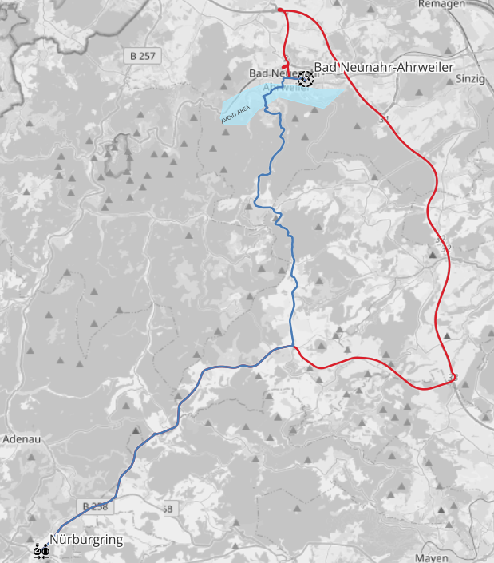
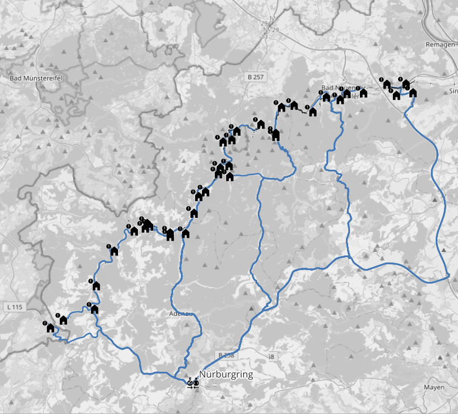
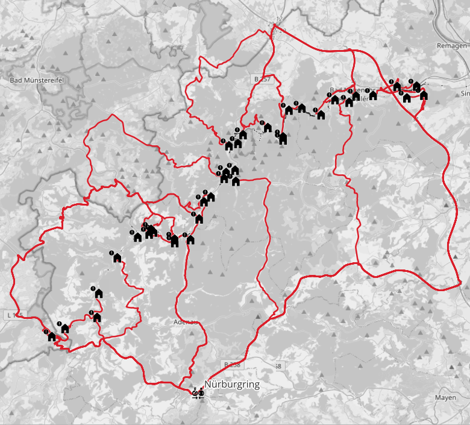
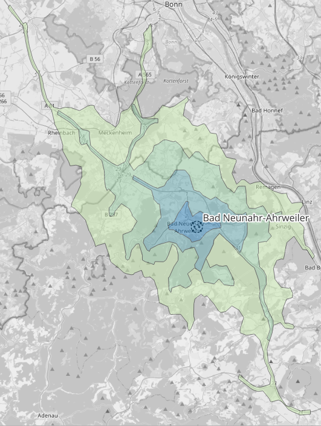

🚧 This training platform and the entire content is under ⚠️construction⚠️ and may not be shared or published! 🚧
Task 6: West Germany / Ahrtal flood logistics#
While exploring the general functionality of the ORS plugin, we will specifically focus on its application in disaster-aware routing. To demonstrate its practical use, we will dive into the scenario of the devastating Ahr Valley flood that occurred in Germany in 2021. By leveraging the plugin’s capabilities, we will learn how to optimize routing decisions in the context of disaster response and recovery.
By the end of this workshop, you will have gained valuable insights and practical skills in using the ORS plugin for QGIS, empowering you to make informed routing decisions and contribute to more efficient disaster management efforts. Let’s embark on this journey of exploring disaster-aware routing with the ORS plugin and QGIS!
Download all datasets here. Save the folder on your computer. Unzip the .zip file. The unzipped folder is structured according to the recommended folder structure for QGIS projects. Under “data > input” you find the following datasets:
nuerburgring.gpkg(points): Point location of the disaster relief staging area or base camp during the emergency response.affected_places.gpkg(points): Communities affected by the flood in the Ahr valley represented as individual points.affected_municipalities.gpkg(points): Municipal boundaries affected by the flood in the Ahr valley represented as polygons.affected_roads_buff2m_WGS84.gpkg(polygons): Road and bridge infrastructure damaged or destroyed by the flood represented as polygonsphysicians.gpkg(points): Physicians located in and close to the Ahr valley represented as points.wpop_ahrvalley.tif(raster): Population counts from WorldPop for the Ahr valley. Raster dataset.
PART 1 - Single routes with ORS Tools#
STEP 1: Creating a Simple Route using the ORS Tools Plugin in QGIS#
In this first task, we will focus on creating a single, straightforward route using the ORS Tools plugin within the QGIS software. Your objective is to define an origin/source and a destination, and utilize the plugin to generate a route between these two points. To get started, you can choose Nürnburgring in Germany as the source location since it served as the staging area for disaster relief during the emergency response. For the destination, you can select Bad Neuenahr-Ahrweiler, the largest city affected by the Ahr Valley flood.
To accomplish this task, refer to the available resources provided above to familiarize yourself with the functionality and features of the ORS Tools plugin. Explore the plugin’s interface, study the options available, and apply the necessary settings to successfully generate the desired route. Feel free to experiment and troubleshoot any challenges you may encounter along the way.
By completing this task, you will gain a solid understanding of how to leverage the ORS Tools plugin in QGIS to create simple routes, setting the foundation for more advanced applications in subsequent exercises. Good luck, and enjoy the learning process!
You have two options to create directions with ORS Tools plugin. Either via the Directions Tool. After installing the plugin you’ll find new entries in your Processing Toolbox in the section ORS Tools. There you find tools on Directions, Isochrones and Matrix. But you can also use the ORS Tools Window, open it via the top navigation Web –> ORS Tools –> ORS Tools. There you can control your origin and destination for the route via the green plus button. You then choose the points from your QGIS map canvas. Via the apply button, a route is calculated.
STEP 2: Incorporating Avoid Areas into the Route using the ORS Tools Plugin in QGIS#
In this second task, we will build upon the knowledge gained from the previous exercise and introduce the concept of avoid areas in route planning using the ORS Tools plugin in QGIS. Your objective is to repeat the workflow of creating a route between the Nürburgring and Bad Neuenahr-Ahrweiler, but this time, you will add specific areas that should be avoided along the route.
To accomplish this, you will need to create a temporary polygon layer in QGIS, which will represent the avoid areas. Refer to the provided resources for detailed instructions on creating and managing temporary polygon layers. Once you have created the layer, you will adjust the corresponding parameter within the ORS Tools interface to account for the avoid areas during route calculation.
In the Directions Tool find the option of Polygons to avoid under Advanced Parameters. In the ORS Tools window you find it under Advanced Configuration –> Avoid Polygon(s)
{kind=link}

Routes from Nürnbergring to Bad Neuenahr-Ahrweiler#
Do you spot any difference in the shapes of the isochrones? Try playing around and changing the shape of your avoid area.
PART 2 - Multiple routes with ORS Tools#
STEP 3: Use a layer with multiple locations to create isochrones#
The third task involves creating multiple directions from the disaster relief staging area to the affected communities in the Ahr Valley. With the Tool Directions from points 2 layers we can input one layer as origin/source and another layer as destinations. Make sure to enable All-by-All int the Layer Mode option to request a direction for every feature in layer1 x layer 2. The resulting directions will come in one single layer with multiple features.
{kind=link}

Multiple routes without flood avoidance to different communities in the Ahrvalley#
STEP 4: Repeat with avoid damaged infrastructure#
Okay, repeat the same procedure but set the option Polygons to avoid in the Advanced Parameters section. Use affected_roads_buff2m_WGS84.gpkg as input.
You will experience some errors during processing like this:
Route from 1 to 24 caused a ApiError:
404 ({"error":{"code":2009,"message":"Route could not be found - Unable to find a route between points 1 (6.9443150 50.3316480) and 2 (6.9730780 50.4900070)."},"info":{"engine":{"version":"6.8.1","build_date":"2023-02-27T01:00:29Z"},"timestamp":1687768940091}})
This is due to some communities are not reachable taken into account the damaged infrastructure. Can you list all the communities not reachable by road? The error message provides you with the index of the location, but you can of course also just verify it directly in your QGIS map view.
{kind=link}

Multiple routes with flood avoidance to different communities in the Ahrvalley#
PART 3 - Single Isochrones with ORS Tools#
Now we will kinda repeat the workflow above but for isochrones within QGIS. We start with single isochrone requests and later do multiple.
STEP 5: Request single isochrones directly from the QGIS map canvas#
Find the QGIS Tool Isochrones from point in your processing toolbox under ORS Tools –> Isochrones. For the option Input Point from map canvas click the three dots on the right, then choose a location on the QGIS map canvas. This will be the location the isochrone will be calculated from. Choose range and intervals, then hit run.
{kind=link}

Single isochrone for Bad Neuenahr-Ahrweiler#
STEP 6: Isochrones and avoid area#
Repeat the same procedure but like in task 4 add the damaged road infrastructure as avoid polygons.

Single isochrone for Bad Neuenahr-Ahrweiler including avoid areas#
How would you describe the difference of both isochrones?
PART 4 - Multiple Isochrones with ORS Tools#
In this second part we create isochrones from locations of physicians in the Ahr Valley, considering both regular isochrones and isochrones that account for blocked roads and damaged bridges due to infrastructure damage.
STEP 7 Use multiple locations to request isochrones with and without avoid areas#
Choose the Isochrones from layer Tool, it is located in your processing toolbox under ORS Tools –> Isochrones. Instead of a single location from the map canvas, we can use a point layer open in QGIS as input. Choose the dataset physicians.gpkg. We will create isochrones for all physicians located in or close to the Ahr valley. For the range choose a maximum range of 30 and intervals of 5: 5,10,15,20,25,30. Hit run.

Multiple isochrones for Bad Neuenahr-Ahrweiler without avoid areas#
Repeat the same procedure but like before with the option polygons to avoid set to the damaged infrastructure dataset.

Multiple isochrones for Bad Neuenahr-Ahrweiler with avoid areas#
As you examine the two isochrone datasets, take a closer look for any discernible patterns. When comparing these isochrones to the damaged infrastructure, pay attention to which segments of the infrastructure appear to have the greatest impact. By identifying and analyzing these areas on the map, you can gain valuable insights into the critical infrastructure segments that are likely to significantly affect healthcare accessibility. These observations will enable you to make informed decisions and prioritize the restoration of infrastructure in the Ahr Valley accordingly.
STEP 8: Postprocess isochrones and join population counts#
This final task will guide you through the postprocessing of the isochrones in QGIS using core functionalities.
The objective is to gain insights into the number of people residing in the affected municipalities who can reach a physician within a 15-minute motorized travel time, considering both the damaged infrastructure and the unaffected travel conditions.
To avoid confusion, make sure to differentiate between the two isochrone datasets by assigning them distinct names, such as isochrones_regular and isochrones_avoid.
Begin by performing an intersection between the isochrone layer and the municipalities. Utilize the Intersection tool in the vector processing toolbox. This step will provide information on which isochrones intersect with each municipality.
Next, dissolve the output to create continuous polygons representing travel time and municipalities. Use the Dissolve tool in the vector processing toolbox, specifying name and AA_Mins as the attributes for the dissolve operation. The result will generate geometries that indicate the extent of travel time for each municipality. For instance, you can determine the area within the Municipality of Altenahr where residents can access a physician within 15 minutes or less.
To enrich the polygons with population counts, load the dataset on population distribution, wpop_ahrvalley.tif. Select the Zonal statistic tool from the processing toolbox. Set the dissolved layer as the input and wpop_ahrvalley as the raster layer. Adjust the statistics calculation to only include the sum of cell values within the zones defined by the dissolved isochrone polygons.
The result will be a comprehensive table displaying population counts for each combination of isochrone travel time and municipality. For visualization purposes, you can extract polygons based on a specific travel time value (e.g., 15) and join them back to the affected_municipalities layer using the id field. This allows you to visualize the polygons with the added attribute of population counts.
Here is an example illustrating the population residing within a 15-minute or less travel time range in each municipality.

Communities in the Ahrtal valley colored according to the population share within 15min or less travel time to the next healthcare facility.#

Same as above but conisdering the flooded areas.#
The grey municipalities inhabitants live outside the range of 15 minutes. May you try it with a higher threshold like 30 minutes an see for changes on municipality level.